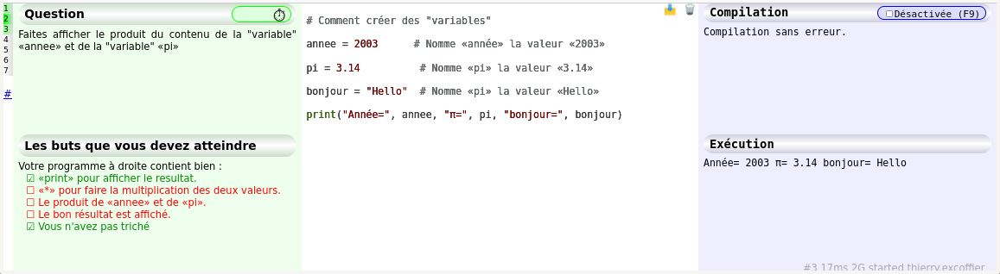
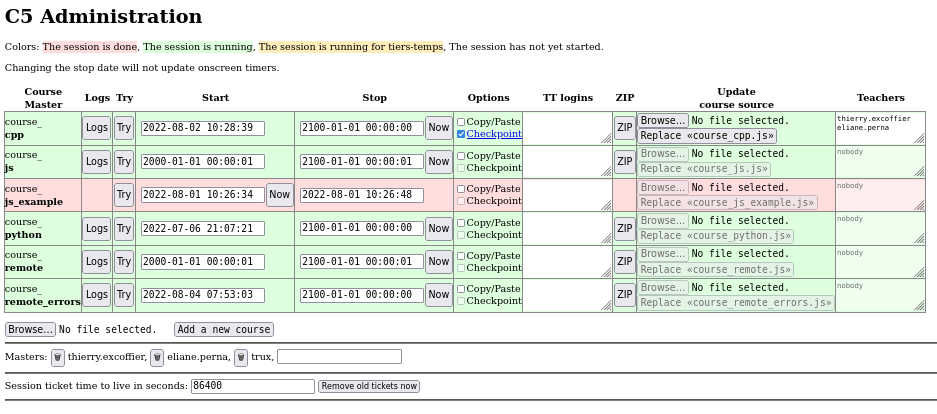
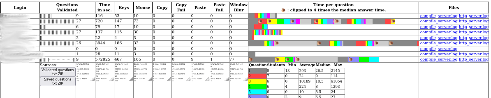
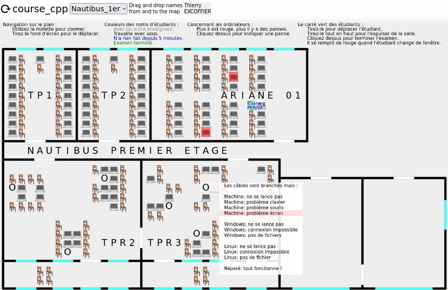

: C5 is Compiler Course Class in the Cloud : C5 is Compiler Course Class in the Cloud
: C5 is Compiler Course Class in the Cloud : C5 is Compiler Course Class in the CloudPourquoi utiliser C5 ?
En effet :
L'ensemble de l'environnement est programmé en Python.
Chaque sujet contient un ensemble de questions s'enchaînant successivement.
Pour chaque question il y a une classe dont les méthodes définissent la question. Voici les méthodes possibles dans l'ordre d'appel lorsque l'étudiant arrive sur la question :
class Q1(Question):
"""Question 1"""
def question(self):
return "<p>Vous devez faire afficher «Bonjour»</p>"
def tester(self):
self.display('<p>Dans votre code source on devrait trouver :</p>')
self.check(self.worker.source, [
['print' , 'Le nom de la fonction «print» pour afficher la valeur'],
['Bonjour', 'Le texte «Bonjour» que vous devez afficher'],
])
if self.worker.execution_result == 'Bonjour\n':
self.next_question()
def default_answer(self):
return "# Tapez votre programme ici :\n"
Un sujet complet est une liste de questions gérées par un unique compilateur. Par exemple :
Compile_Python([Q0(), Q1(), Q2(), Q3(), QEnd()])
self.set_options(
{
'language': 'javascript',
'forbiden': "Coller du texte copié venant d'ailleurs n'est pas autorisé.",
# Affichage dépend du navigateur
# Mettre une chaine vide pour désactiver la confirmation (pendant le débugage)
'close': "Voulez-vous vraiment quitter cette page ?",
'question_title': 'Question',
'tester_title': 'Les buts que vous devez atteindre',
'compiler_title': 'Compilation',
'compiler_title_toggle': 'Désactivée (F9)',
'compiler_title_button': 'Maintenant ! (F9)',
'executor_title': 'Exécution',
'good': ["Bravo !", "Excellent !", "Super !", "Génial !", "Vous êtes trop fort !"],
'icon_reset': '🗑',
'icon_save': '📩',
'reset_confirm': 'Vous voulez vraiment revenir à la version de départ ?',
'time_running': 'Fini dans',
'time_done': "Fini depuis",
'time_seconds': " secondes",
'time_days': " jours",
'time_d': " j ",
'time_m': " m ",
'time_h': " h ",
'allow_copy_paste': False,
'display_reset': True,
'automatic_compilation': True, # Recompile dès que c'est possible
'positions' : { # [X, Largeur, Y, Hauteur, Couleur] en pourcentage écran
'question': [1, 29, 0, 30, '#EFE'],
'tester': [1, 29, 30, 70, '#EFE'],
'editor': [30, 40, 0, 100, '#FFF'],
'compiler': [70, 30, 0, 30, '#EEF'],
'executor': [70, 30, 30, 70, '#EEF'],
'time': [80, 20, 98, 2, '#0000'],
'index': [0, 1, 0, 100, '#0000'],
'save_button': [66, 2, 0, 2, '#0000'],
'reset_button': [68, 2, 0, 2, '#0000'],
},
# For compile_remote. The values must be allowed by the server.
'compiler': 'g++', # or 'gcc'
'compile_options': ['-Wall'], # -pedantic
'ld_options': [],
'allowed': [], # system call allowed 'brk'
})
Il faut mettre seulement les options qui changent.
Les options restent les mêmes tant qu'elles ne sont pas modifiées.
La disposition de l'écran peut changer d'une question à l'autre.
Il est nécessaire d'avoir un compilateur du langage écrit en JavaScript :
Les utilisateurs sont :
La page d'accueil va être différente pour ces 3 catégories de personnes.
Il voit la liste des sessions en cours :
Au dessous de la liste :
Cette configuration est dans le fichier c5.cf plus un fichier course_....cf par session.
Les administrateurs peuvent regarder le détails de tous les cours. Pour chaque étudiant on a le détail et le résumé de toute la colonne sur la dernière ligne (importable directement dans TOMUSS).
Quand un surveillant (non administrateur) arrive sur C5 on lui liste tous les examens présents et futurs pour lesquels il est surveillant. Il clique alors sur Checkpoint pour gérer la salle d'attente.
La salle d'attente affiche en haut de l'écran :
Le haut du plan contient la légende et comment l'utiliser. Les surveillants normaux ne voient que leurs étudiants, les administrateurs voient tous les étudiants passant l'examen.
Les ordinateurs en rouge sont ceux avec un problème, les surveillants peuvent déclarer les problèmes.
Les étudiants qui changent de fenêtres pendant l'examen sont mis en évidence sur cette vue.
L'étudiant voit la liste de tous les examens en cours et à venir. Il doit cliquer sur le bon si l'enseignant ne lui a pas donné le lien direct.
Une fois sur le cours, si celui-ci a une salle d'attente, cela affiche «Donnez votre nom à l'enseignant pour qu'il vous ouvre l'examen»
Lancez ces commandes (Ubuntu) :
apt update apt install python3-websockets python3-aiohttp curl npm # nginx certbot git clone https://github.com/texcoffier/C5.git cd C5 make
Si tout s'est bien passé, une page web s'ouvre sur une copie de cette page qui est sur votre machine. L'interface d'administration est .../adm/home
Il faut remplacer /WebSocket/, 4201, 4202 par les bonnes valeurs.
server {
listen 443 ssl;
server_name c5.univ-lyon1.fr;
ssl_certificate /etc/letsencrypt/live/c5.univ-lyon1.fr/fullchain.pem; # managed by Certbot
ssl_certificate_key /etc/letsencrypt/live/c5.univ-lyon1.fr/privkey.pem; # managed by Certbot
location ~ /WebSocket/ {
rewrite ^/WebSocket/(.*) /$1 break;
proxy_pass http://127.0.0.1:4202;
proxy_http_version 1.1;
proxy_set_header Upgrade $http_upgrade;
proxy_set_header Connection Upgrade;
proxy_set_header Host $host;
proxy_set_header X-Forwarded-For $proxy_add_x_forwarded_for;
}
location ~ {
proxy_pass http://127.0.0.1:4201;
proxy_set_header X-Forwarded-For $proxy_add_x_forwarded_for;
}
}
Légende :
Ordre alphabétique des fichiers.
| 127 | Administre C5 sur la machine locale (même paramètres que utilities.py) |
| BUILDINGS/Nautibus BUILDINGS/empty | Les plans des bâtiments |
| Makefile | Utilisé par utilities.py, pas directement. |
| README.rst | Page d'accueil pour GitHub |
| adm_course.py | Page d'accueil du cours avec les statistiques étudiants. |
| adm_home.py | Page d'accueil administrateur listant tous les cours. |
| c5.svg | Logo |
| ccccc.css ccccc.py | Interface d'étudiant pour travailler |
| checkpoint.py | Gestion de la salle d'attente et placement des étudiants sur le plan. |
| compatibility.py | Utilitaires pour ajouter des fonctions manquantes à JavaScript |
| compile.py | La classe racine de tous les compilateurs. |
| compile_cpp.py | Compilateur incomplet C++ en javascript. |
| compile_js.py | Interpréteur JavaScript |
| compile_python.py | Interpréteur Python (brython) |
| compile_remote.py | Contacte compile_server.py pour compiler et exécuter. |
| compile_server.py | Serveur de compilation et exécution de C++ avec différents compilateur et options possibles. |
| course_cpp.py | Exemple d'utilisation de compile_cpp et de récupération des informations concernant la place de l'étudiant dans la salle. |
| course_js.py | Mini cours de JavaScript |
| course_js_example.py | Un exemple minimaliste de cours pour commencer. |
| course_python.py | Un mini cours Python |
| course_remote.py | Exemple d'utilisation de compile_remote |
| course_remote_errors.py | Une série d'exercices dans lesquels l'étudiant doit corriger des erreurs de syntaxe. |
| favicon.ico | L'icone des page web, calculée à partir de c5.svg |
| http_server.py | Le serveur web C5 pouvant fonctionner seul ou derrière un server web classique. |
| index.html | Cette page d'explication |
| infos_server.py | Un filtre (stdin/stdout) calculant le nom et prénom à partir du login |
| load_testing.py | Un simulateur de charge pour voir combien le système supporte d'étudiants. Difficilement utilisable car il faut le modifier pour indiquer un bon ticket de session. |
| question.py | La classe permettant de définir les questions. |
| screen-admin.png screen-checkpoint.png screen-course.png screen-python.png screen-src.png screen-student.png screen-teacher-list.png | Copies d'écran pour cette page. |
| tests.py | Tests de régression (ne teste pas la salle d'attente). |
| utilities.py | Classes et fonctions nécessaires pour les serveurs,
mais c'est aussi le script d'administration du serveur.
Run it without argument will display:
|
Installer les paquets :
apt install python3-selenium chromium-chromedriver firefox-geckodriver xnest xvfb
Lancer les tests :
Le résumé est dans tests.log
Fonctionnalités manquantes: